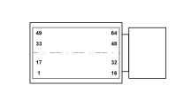

M010B ENGINE MANAGEMENT ECU (FRONT)
- Path
- Electrical equipment > 3 CONNECTORS > M INTERMITTENT AND TIMED ELECTRONIC DEVICES > M010 ENGINE MANAGEMENT ECU > M010B ENGINE MANAGEMENT ECU (FRONT)
- Kind
- connector pinout (pin -> wire colour -> other end)
- Applies to
- engines: 1.2 8v; all production periods; only with equipment: Smart gearbox
- Interactive page
- https://sloeber94.github.io/elrnDB-fPnd/en/#/169003426
Applies to: engines: 1.2 8v; all production periods; only with equipment: Smart gearbox

Wiring | Colour |
|---|---|
- |
Pin | Cable | Destination | |||
|---|---|---|---|---|---|
Sec.. | Colour | Node | Connect. | Pin | |
2 | 0,5 | GR (yellow with red stripe) | D | ||
3 | 0,5 | MB (brown with white stripe) | A | ||
7 | 0,5 | HG (grey with yellow stripe) | C | ||
10 | 0,5 | BR (white with red stripe) | 5 | ||
11 | 0,5 | HV (grey with green stripe) | 13 | ||
12 | 0,75 | CB (orange with white stripe) | X | 7 | |
57 | |||||
29 | |||||
15 | 0,5 | NZ (black with violet stripe) | B | ||
16 | 0,5 | BR (white with red stripe) | 25 | ||
29 | 0,75 | GH (yellow with grey stripe) | X | 12 | |
7 | |||||
57 | |||||
34 | 0,5 | RV (red with green stripe) | 8 | ||
35 | 0,5 | ZB (violet with white stripe) | 3 | ||
36 | 0,5 | M (brown) | 1 | ||
40 | 0,5 | VB (green with white stripe) | C | ||
42 | 0,5 | AN (light blue with black stripe) | F | ||
46 | 0,5 | S (pink) | E | ||
50 | 0,5 | CV (orange with green stripe) | 1 | ||
52 | 0,5 | V (green) | 1 | ||
55 | 0,5 | M (brown) | 54 | ||
58 | 0,5 | CN (orange with black stripe) | 10 | ||
62 | 0,5 | ZB (violet with white stripe) | 58 | ||
63 | 0,35 | MV (brown with green stripe) | 48 | ||
Topics linked from this page (14)
- 12 FRONT
- B001D JUNCTION UNIT (FRONT)
- D001 FRONT/DASHBOARD COUPLING
- D004 FRONT/ENGINE COUPLING
- D097A SHORT CIRCUITING COUPLING (FRONT)
- D097C SHORT CIRCUITING COUPLING (FRONT)
- D097G SHORT CIRCUITING COUPLING (FRONT)
- D097H SHORT CIRCUITING COUPLING (FRONT)
- I031 CLUTCH PEDAL SWITCH
- K055 ACCELERATOR PEDAL POTENTIOMETER
- M001C BODY COMPUTER (FRONT)
- M001D BODY COMPUTER (FRONT)
- M010B ENGINE MANAGEMENT ECU (FRONT)
- M054A ROBOTIZED TRANSMISSION CONTROL UNIT (FRONT)